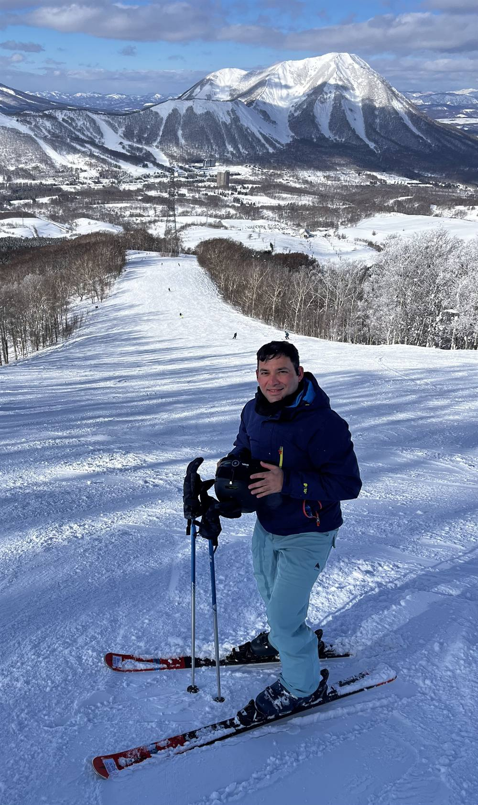

I am Akash. I started Geometrisk because most businesses carry more risk than they realise, and pay for the wrong protection because of it.
Every business has a line. On one side sit the losses you can absorb and keep trading. On the other sit the ones that can take the whole thing down. Insurance is one way to deal with what sits on the wrong side. It is rarely the only way, and often not the cheapest. My job is to help you see your line clearly, then lower what sits past it, so you keep more of what you earn and sleep a little better.
I am not a broker and I do not sell policies. That means I have no reason to point you at a product. I only point you at what actually reduces your risk.
I have been fascinated by risk for as long as I can remember. Not the reckless kind. The quiet, everyday kind that decides whether a business is still standing in five years.
For fifteen years I worked on the big end of that question. I built risk teams from scratch at a general insurer as it grew from A$700 million to A$3.5 billion. Before that I advised banks, insurers and their regulators when large things went wrong and someone had to work out why, and what to do next.
Along the way I noticed something. The tools the big end uses to think clearly about risk, the plain logic of what you can absorb and what you cannot, almost never reach the businesses that need them most. A café, a workshop, a small manufacturer. These owners carry real risk every day, mostly on gut feel, and usually alone. Geometrisk is my attempt to close that gap.
A loss is not just a number you subtract. It resets the base you build from. Lose a year of savings and you are not down one year. You are behind on every year that follows, because you are compounding from a smaller number.
That is why the size of a loss matters more than how likely it is. A small, common loss is a cost of doing business. A large, rare one can end the business. Most owners spend their worry, and their premiums, on the first kind and leave the second kind exposed. Getting that the right way round is most of the work.
Fifteen years across insurance, banking and regulation. Time spent inside the room where capital, reinsurance and hard trade-offs get decided. And a habit, learned the slow way, of turning a tangled problem into a clear picture a business owner can act on.
I care about getting it right, and I care about the people on the other side of the desk. Competence without warmth is just a lecture. I try not to give those.
I am a husband and a dad to two boys, which is its own daily lesson in managing risk with incomplete information. I read widely, collect mental models the way some people collect tools, and get to the snow whenever I can. I am drawn to the same thing in business that I am on a slope: reading the terrain, taking the line you can handle, and leaving the one you cannot.

If you have ever wondered how much your business could take on the chin before it hurt, that is exactly the question I like to sit with.